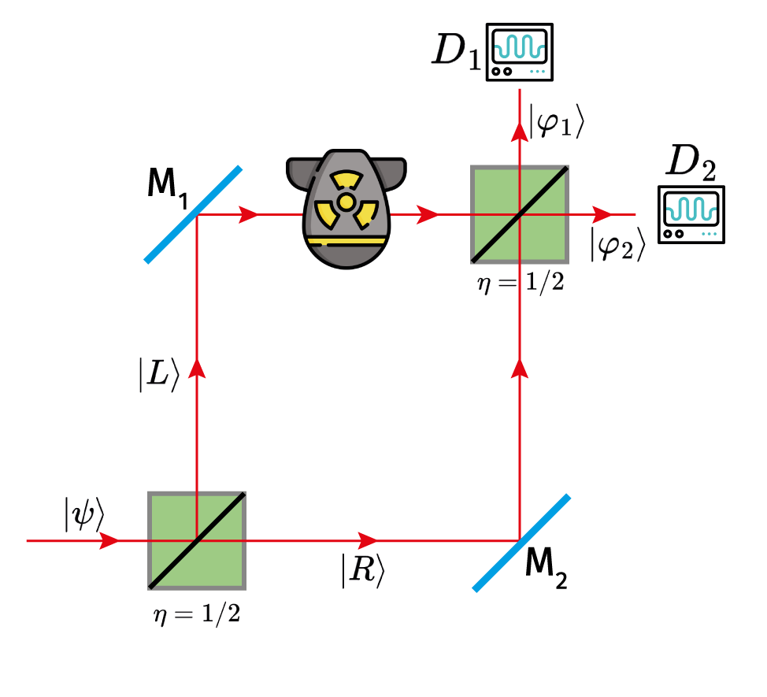
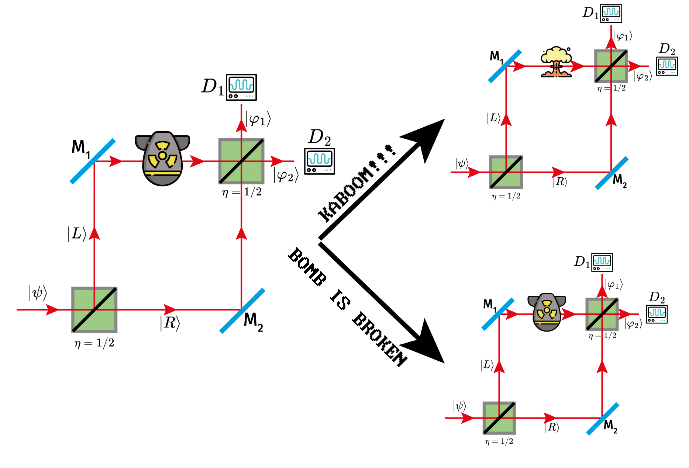

Problem Statement
This problem also well-known as Elitzur–Vaidman bomb tester. The idea is to use interaction-free measurement to detect the presence of a sensitive bomb without detonating it. Here is the problem statement:
You have a collection of bombs, some of which are functional and some are duds. A functional bomb will explode if a single photon interacts with it with $100\%$ probability, while a dud will not. Your task is to identify the functional bombs without detonating them.This case is the great example of how quantum mechanics can defy our classical intuition.
Solution
The solution involves using a Mach-Zehnder interferometer, which splits a photon into two paths using a beam splitter. One path leads to the bomb, while the other path is free of any obstacles.  Know I will briefly explain you how every optical element is working n this setup:- Beam Splitter (BS): A beam splitter divides an incoming photon into a superposition of two paths. For a beam splitter with transmition $\eta = 1/2$, the state transformation is given by: $$ \ket{\psi} \rightarrow \frac{1}{\sqrt{2}} (\ket{R} + i \ket{L}) $$ where $\ket{L}$ and $\ket{R}$ represent the left and right paths, respectively.
- Mirrors (M): Mirrors reflect the photon without changing its state, effectively redirecting it along a different path. Mathematically, a mirror can be represented as: $$ \ket{\psi} \rightarrow -\ket{\psi}$$
- Detectors (D): Detectors measure the presence of a photon in a particular path. If a photon is detected, it collapses the superposition state.
Firstly we will consider the dud bomb case. Assume the bomb state as $\ket{B^{(0)}_{dud}}$ and detectors $D_1^{(0)}$, $D_2^{(0)}$. The photon state after the first beam splitter is: $$ \ket{\psi} \ket{B^{(-)}_{dud}} \ket{D_1^{(0)} D_2^{(0)}} \xrightarrow{BS_1} \frac{1}{\sqrt{2}} \left( \ket{R} + i\ket{L} \right) \ket{B^{(-)}_{dud}} \ket{D_1^{(0)} D_2^{(0)}} $$ The photons then reflects off the mirrors: $$ \xrightarrow{M_1, M_2} -\frac{1}{\sqrt{2}} \left( \ket{R} + i \ket{L} \right) \ket{B^{(-)}_{dud}} \ket{D_1^{(0)} D_2^{(0)}} $$ The bomb is dub, so it does not interact with the photon. After the second beam splitter, the state becomes: $$ \xrightarrow{BS_2} -i\ket{\varphi_2}\ket{B^{(-)}_{dud}} \ket{D_1^{(0)} D_2^{(0)}} = -i \ket{B^{(-)}_{dud}} \ket{D_1^{(0)} D_2^{(1)}} $$ So, we will always detect the photon in the detector $D_2$ when the bomb is a dud.
Let's now consider the functional bomb case.  Assume the bomb state as $\ket{B^{(0)}_{\text{boom}}}$. The state evolution is the same up to the interaction with the bomb. After the photon reaches the bomb, there are two possibilities: either the photon interacts with the bomb and causes it to explode, or it does not interact and continues its path. The state after the bomb interaction can be expressed as: $$ \xrightarrow{KABOOM!} -\frac{1}{\sqrt{2}}\ket{B_{\text{boom}}^{(+)}} \ket{D_1^{(0)}, D_2^{(0)}} - \frac{1}{\sqrt{2}} \left(\ket{R} + i \ket{L} \right)\ket{B_{\text{boom}}^{(-)}} \ket{D_1^{(0)}, D_2^{(0)}} $$ The first term represents the case where the photon interacts with the bomb, causing it to explode. The second term represents the case where the photon does not interact with the bomb and continues its path. After passing through the second beam splitter, the state becomes: $$ \xrightarrow{BS_2} -\frac{1}{\sqrt{2}}\ket{B_{\text{boom}}^{(+)}} \ket{D_1^{(0)}, D_2^{(0)}} - \frac{i}{2} \ket{B_{\text{boom}}^{(-)}} \ket{D_1^{(1)}, D_2^{(0)}} - \frac{1}{2} \ket{B_{\text{boom}}^{(-)}} \ket{D_1^{(0)}, D_2^{(1)}} $$ Now let's right a resume of the possible outcomes:
- Bomb explodes: This occurs with a probability of $1/2$, corresponding to the first term in the final state.
- Photon detected at $D_1$: This occurs with a probability of $1/4$, corresponding to the second term. In this case, we can infer that the bomb is functional without detonating it.
- Photon detected at $D_2$: This occurs with a probability of $1/4$, corresponding to the third term. In this case, we cannot determine whether the bomb is functional or a dud.
How can we increase the probability of bomb detection?
To increase the probability of detecting a functional bomb without detonating it, we can use a series of beam splitters and mirrors to create multiple paths for the photon. This setup is known as the Quantum Zeno Effect. By repeatedly measuring the presence of the photon in the path leading to the bomb, we can increase the likelihood of detecting the bomb without causing it to explode. But it will be the next post topic!